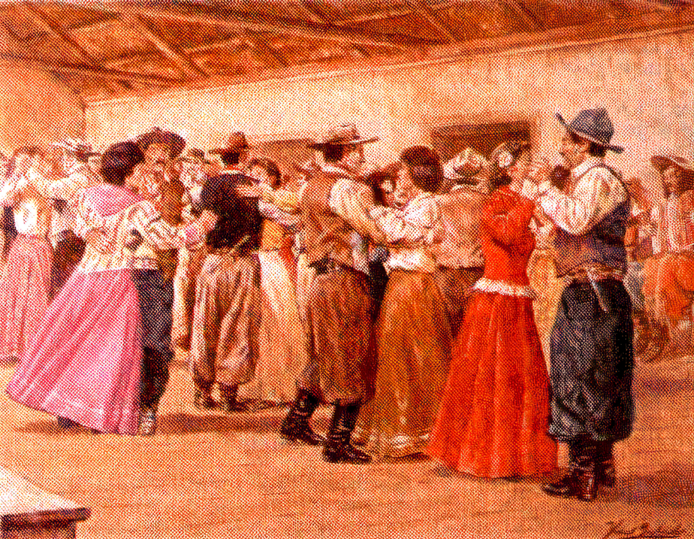
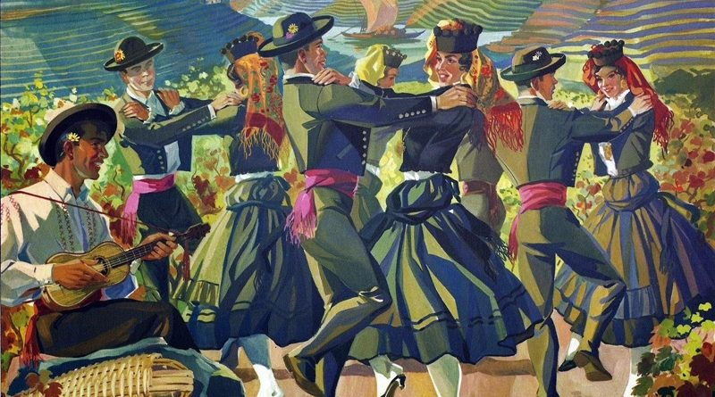
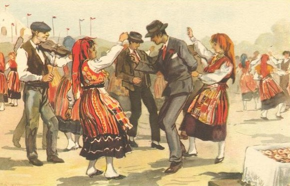
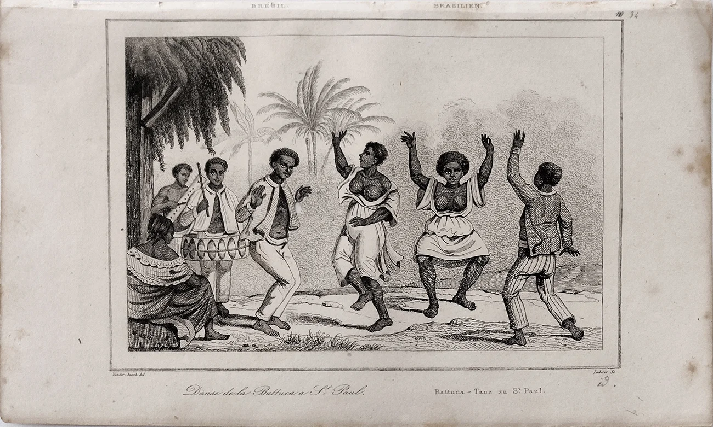
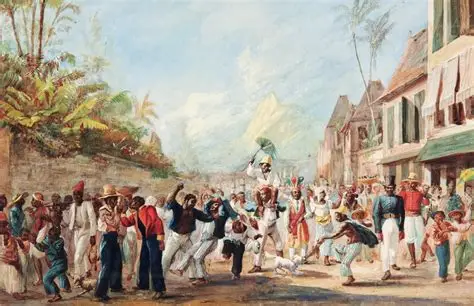
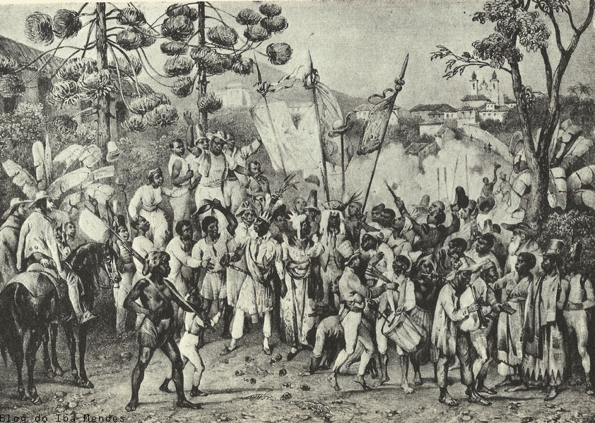

<!DOCTYPE html>
<html lang="en">
<head>
    <meta charset="UTF-8">
    <meta name="viewport" content="width=device-width, initial-scale=1.0">
    <script src="https://cdn.jsdelivr.net/npm/marked/marked.min.js"></script>
    <title>Dança</title>
</head>
<body>
    <div id="content"></div>
<script>
    const markdownText = `# BASE TEÓRICA - PESQUISA

A dança colonial brasileira é um mapa em movimento: nela se leem trajetórias de encontro, imposição, adaptação e resistência. Chegou com os portugueses na forma de danças cortesãs e rituais religiosos - fandango, vira e chula, por exemplo - que trouxeram passos, sapateados, palmas e repertórios de violas para salões e festas públicas. Essas formas ibéricas marcaram a cena festiva das casas-grandes e das celebrações de padroeiro, onde os autos religiosos e os “mistérios” jesuíticos incorporavam elementos coreográficos como instrumento de catequese e espetáculo comunitário.

Paralelamente, as populações indígenas preservavam um universo coreográfico diverso, ligado a ritos de colheita, cura, luto e iniciação. Torés no Nordeste e o Kuarup no Xingu são dois exemplos de danças rituais que articulavam canto, percussão, instrumentos tradicionais e movimentos circulares. Quando os missionários tentavam evangelizar, muitas vezes adaptavam essas danças - mudando a letra, o ritmo ou o contexto - para torná-las compatíveis com práticas cristãs, processo que apagava parte dos significados originais, mas também criou novas formas híbridas.

Da África também vieram ritmos, instrumentos e movimentos que transformaram a cena performativa colonial. O lundu, com sua sensualidade e canto, e o batuque, de forte marcação rítmica e coletividade, passaram do terreno das senzalas e quilombos para as praças e festas urbanas, atravessando as fronteiras sociais. Irmandades negras e cultos sincréticos deram origem a diversas festas, como a congada e o moçambique, cortejos que combinavam a devoção católica com danças africanas e dramatizações - foram manifestações religiosas e ao mesmo tempo espaços de sociabilidade e afirmação identitária.

O encontro entre essas culturas - portuguesa, indígena e africana - deu nascimento a formas híbridas e a uma prática festiva na qual o 'sagrado' e o 'profano' se entrelaçavam. Em festas de padroeiro e festas rurais, passos ibéricos podiam conviver com ritmos de tambor; em autos e folguedos, movimentos indígenas e africanos eram reinterpretados sob a lente cristã. A tolerância da Igreja para com certas danças profanas, quando enquadradas como louvor, ajudou a criar esse terreno ambíguo onde a apropriação e o sincretismo floresceram.

No cotidiano, a dança cumpria papéis distintos: diversão e ostentação nas casas-grandes; descanso, sociabilidade e transmissão cultural nas senzalas; reafirmação comunitária e reprodução de laços nos quilombos; e expressão urbana nos portos e vilas. Dançar era também forma de resistência: nas senzalas, manter repertórios, ritmos e memórias era preservar identidades frente à violência cotidiana e nos quilombos, a dança consolidava as práticas africanas.


# ADAPTAÇÃO PARA O CONTEXTO DO TRABALHO

Um painel expositivo será feito, apresentando algumas danças do período colonial português, dividas por origem: portuguesa, indígena, africana, ou híbrida. Haverá uma imagem representando cada dança, privilegiando gravuras e pinturas antigas, quando possível. Além disso, informações da base teórica estarão presentes em quadrinhos, sendo elas: contexto social, sincretismo e apropriação, vida cotidiana e citações de documentos históricos que retratam o exposto.


# ORGANIZAÇÃO DO PAINEL DE DANÇA

## 1. Estrutura geral

O painel será divido verticalmente em 3 regiões principais:

**[ CABEÇALHO / TÍTULO / SUBTÍTULO ]**

---

**[ COLUNA ESQUERDA (CATEGORIAS E IMAGENS) ] | [ COLUNA DIREITA (QUADRINHOS DA BASE TEÓRICA E CITAÇÕES) ]**

---

**[ RODAPÉ / FONTES / CRÉDITOS ]**

## 2. Proporções
Topo: faixa de 15% da altura com título e subtítulo (legível).

Corpo: 60% da altura dividido em 2 colunas: Esquerda 65% - categorias e imagens (danças por origem) - cada dança com imagem e descrição curta; Direita 35% - blocos “quadrinhos” da base teórica - contexto social, sincretismo e apropriação, vida cotidiana.

Rodapé: 25% da altura com trechos de documentos históricos e referências.

## 3. Fontes tipográficas
* **Título:** EB Garamond 64-80
* **Subtítulo:** Montserrat 24-30
* **Cabeçalhos de seção:** Aptos bold 28-34
* **Texto corrido:** Space Mono 12-14
* **Texto dos “quadrinhos”:** Times New Roman 10-12


## 4. Conteúdo
    ### Topo:
        - Título: Dança Colonial
        - Subtítulo: Formas, ritualidades e ritmos portugueses, indígenas e africanos e as formas híbridas que atravessaram o Brasil Colonial

### Corpo 1 - esquerda:
- A - Herança Portuguesa
   * Fandango: Dança de sapateado, palmas e violas; presente em festas religiosas e folguedos rurais.
   

   * Vira e chula: danças de roda e pares presentes em casamentos e festas de padroeiro; influências ibéricas na coreografia.
   
   

- B - Danças Indígenas
   * Toré e Kuarup: ritos coletivos ligados a colheita, cura e iniciação; utilizam canto e instrumentos de sopro/percussão.
   

- C - Danças Africanas
   * Lundu, Batuque, Congada e Moçambique: ritmos percussivos e coletivos; presença em senzalas, quilombos e festas das irmandades negras.
   

- D - Formas híbridas
   * Autos, folguedos e danças sincréticas: formas resultantes de encontro - autos jesuíticos, congado com elementos católicos e africanos, etc.
   

### Corpo 1 - direita:
1) Contexto social: A dança estava em toda parte: nos salões das casas-grandes, nas praças de festa, nas capelas durante procissões e nas senzalas e quilombos. Em cada espaço ela cumpria papéis distintos - espetáculo e distinção social nas elites; sociabilidade, alívio e recriação nas classes populares; rito e memória entre povos indígenas. As festas públicas e religiosas foram os palcos onde essas diferenças se expuseram e também onde se entrecruzaram.

2) Sincretismo e apropriação: Ao longo do período colonial, movimentos, ritmos e gestos indígenas, africanos e portugueses se misturaram, dando origem a formas híbridas. Missionários e elites europeias frequentemente reinterpretaram ou instrumentalizaram danças locais (por exemplo, em autos catequéticos), enquanto comunidades negras e indígenas preservavam e reelaboravam repertórios, transformando-os em práticas comuns às festas católicas. O resultado foi um repertório festivo marcado por sobreposições simbólicas e adaptações mútuas.

3) Vida cotidiana e resistência: Dançar era parte da rotina festiva - em batizados, colheitas, casamentos e festas de padroeiro - e também era um gesto de resistência cultural nas senzalas. Nesses contextos, a dança servia para manter laços comunitários, transmitir memórias e tradições e criar espaços de autonomia simbólica. Nos quilombos, as práticas coreográficas consolidavam a identidade coletiva e funcionavam como instrumento de solidariedade e de autoafirmação.`;
document.getElementById("content").innerHTML = marked.parse(markdownText);
</script>
</body>
</html>